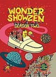
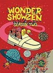

Wonder Showzen
Stephen Klancher
...has seen 1
...has seen 0 hours
...has not seen 0.3 hours

Timeline
Most Recent:
Birth
...has seen 1
...has seen 0 hours
...has not seen 0.3 hours
Timeline
Most Recent:
Birth



Wonder ShowzenStephen Klancher ...has seen 1 ...has seen 0 hours ...has not seen 0.3 hours Timeline Most Recent: Birth  Watched an episode not known by IMDb? |